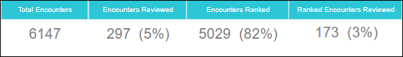
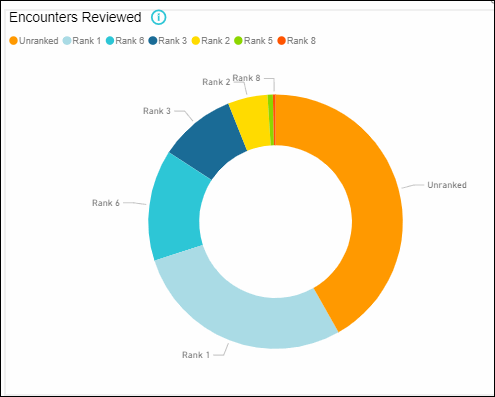
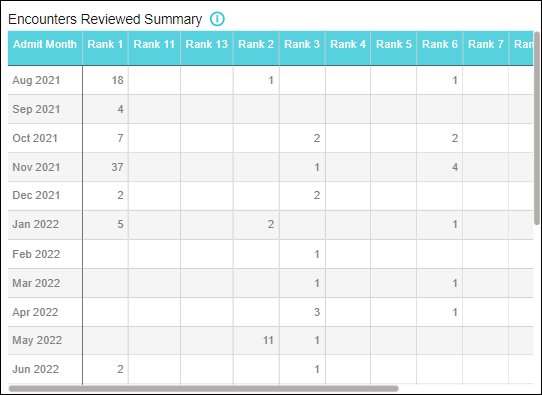

Ranked Encounters
Overview: The Ranked Encounters dashboard helps CDI managers to gain insights into ranked encounters that CDSs have reviewed, optimize resource allocation, and enhance the overall productivity of the team.
By default, the report displays data for last 9 calendar months based on the admission date. The dashboard also helps you group data by week, month, quarter, and year and analyze trends over different time periods and analyze them more easily.
Navigation: On the Analytics home page left side panel, navigate to .
- KPI Cards: Total Encounters, Encounters Reviewed, Encounters Ranked, and Ranked Encounters Reviewed
- Encounters Reviewed
- Encounters Reviewed Summary
-
Encounters that have been given a rank in CDE Triage are called ranked encounters. The current rank of an encounter may be blank.
-
Encounters are ranked based on the rules that are defined for the prioritization within CDE Triage.
- The following encounter types are considered:
- Both ranked (standard and custom) and unranked encounters
- Highest rank of the encounter
- Count of all encounters that have been assigned a rank and have an initial review date/time.
- All encounter statuses except 'Review Not Needed' are considered.
On the top panel, you can select desired values for the slicers (refer Report Slicers ) and the corresponding data gets filtered in the charts.
For View By option, refer View By.
For filters on all pages, refer Filters on all Pages.
For Footnotes, refer Footnotes.
Ranked Encounters


| KPI Card | Description |
|---|---|
| Total Encounters | Displays total encounters for the selected "View By"
option. Total Encounters: Count of inpatient admissions or discharges with status other than 'Review Not Needed'. |
| Encounters Reviewed |
Displays count and percentage of encounters reviewed with or without clarifications. Format: Encounters Reviewed (% Encounters Reviewed) 117 (80%). % Encounters Reviewed = Encounters Reviewed / Total Encounters x 100. This value is rounded to 0 decimal places. For example, 80%. |
| Encounters Ranked |
Displays the count and percentage of encounters ranked for the selected time period. Format: Encounters Ranked (% Encounters Ranked) 76 (77%). Encounters Ranked: The count of encounters that have ever been assigned a standard or custom rank in CDE Triage. The current rank for the encounter may be blank. % Encounters Ranked = Encounters Ranked / Total Encounters x 100. This value is rounded to 0 decimal places, for example, 30%. Total Encounters: Count of inpatient admissions or discharges with status other than 'Review Not Needed'. |
| Ranked Encounters Reviewed |
Displays the count and percentage of ranked encounters reviewed for the selected time period. This count includes all encounters that have been assigned a rank and have an initial review date/time Format: Ranked Encounters Reviewed (% Ranked Encounters Reviewed) 67 (89%). Ranked Encounters Reviewed: The count of ranked encounters reviewed with or without clarifications. % Ranked Encounters Reviewed = Ranked Encounters Reviewed / Encounters Ranked x 100. This value is rounded to 0 decimal places, for example, 30%. |
Encounters Reviewed

This chart allows users to analyze volume and percentage of reviews for each rank category for the selected 'View By' option.
Info Icon(Text on hover): Includes encounters other than 'Review Not Needed'. The visual shows the data for all standard and custom ranks by default. For data on encounters with specific ranks, use the 'Highest Rank’ slicer.
| Metric | Description |
|---|---|
| Encounters Reviewed | Displays the count of reviewed encounters for each standard or custom
rank. Encounters that were reviewed but do not have a rank are listed
under 'Unranked' category. Note: Ranked Encounters
that were reviewed (have initial review date/time) but were later
changed to "Review Not Needed" are excluded from this metric
calculations. |
Encounters Reviewed Summary

This chart helps users analyze how many reviews each rank category has for every CDS during the chosen time period. It displays the breakdown of encounters reviewed by the rank category for the selected 'View By' option.
Info Icon(Text on hover): Includes encounters other than 'Review Not Needed'. The visual shows the data for all standard and custom ranks by default. For data on encounters with specific ranks, use the 'Highest Rank’ slicer.
| Metric | Description |
|---|---|
| Encounters Reviewed | Displays the count of reviewed encounters for each standard or custom
rank category. Reviewed encounters that do not have a rank assigned are
grouped under the 'Unranked' category. Note: When
you choose the 'View By' option as CDS, you are looking at the CDS
that conducted the initial review. This count includes all ranked
encounters that had an initial review date/time. However, encounters
that were initially reviewed but later marked as "Review Not Needed"
are excluded from this calculation. |
| View By | Description |
|---|---|
| Admit Date | When this option is selected, all charts in the dashboard display
the data by month of admission in ascending order. The dashboard
also helps you group data by week, month, quarter, and year and
analyze trends over different time periods and analyze them more
easily. When the ‘View By’ is Admit Month, the data in all the
charts is sorted by Admit month in ascending order. Note: Admit Month is selected as the default
'View By' option. |
| Discharge Date |
When this option is selected, all the charts in the dashboard display the data by month of discharge in ascending order. The dashboard also helps you group data by week, month, quarter, and year and analyze trends over different time periods and analyze them more easily. When the ‘View By’ is Discharge Month, the data in all the charts is sorted by Discharge month in ascending order. |
| Facility |
When this option is selected, all the charts in the dashboard display the data by facility in ascending order. When the ‘View By’ is Facility, the data in all the charts is sorted by Facility name in ascending order. |
| Payer |
When this option is selected, all the charts in the dashboard display the data by payer in ascending order. When the ‘View By’ is Payer, the data in all the charts is sorted by Payer in ascending order. |
| CDS | When this option is selected, all the charts in the dashboard
display the data by CDS. When the ‘View By’ is CDS, the data in all the charts is sorted by CDS name in ascending order. |
| Slicer | Description |
|---|---|
| Admit Date |
|
| Discharge Date |
|
| Reset |
|
| Facility |
|
| Payer |
|
| CDS |
|
| Unit |
|
| Highest Rank |
Note:
This slicer filters the data based on
the highest standard/custom rank ever assigned to an encounter
(where 1 is the highest standard rank and 11 is the lowest
standard rank). |
| "Group By" and "Week Start Day" options | These options are available only when the View By option is selected as Admit Date/Discharge Date. |
| Filter | Description |
|---|---|
| Patient Type |
|
| Admit Service |
|
| Visit Type |
|
| Weekend Only Stay |
|
| Formulas | Text on hover |
|---|---|
| Total Encounters | Count of inpatient admissions or discharges with a status other than 'Review Not Needed'. |
| Encounters Reviewed | The count of encounters reviewed with or without clarifications. % Encounters Reviewed = Encounters Reviewed / Total Encounters x 100. (Rounded to 0 decimal places) E.g., 80%. |
| Encounters Ranked | The count of encounters that have ever been assigned a standard or custom rank in CDE Triage. The current rank for the encounter may be blank; % Encounters Ranked = Encounters Ranked / Total Encounters x 100. (Rounded to 0 decimal places) E.g., 30%. Total Encounters: Count of inpatient admissions or discharges with status other than 'Review Not Needed'. |
| Unranked Encounters | The count of encounters that have never been assigned a standard or custom rank in CDE Triage. % Unranked Encounters = Unranked Encounters / Total Encounters x 100. (Rounded to 0 decimal places) E.g., 30%. Total Encounters: Count of inpatient admissions or discharges with status other than 'Review Not Needed'. |
| Ranked Encounters Reviewed | The count of ranked encounters reviewed with or without clarifications. % Ranked Encounters Reviewed = Ranked Encounters Reviewed / Encounters Ranked x 100. (Rounded to 0 decimal places) E.g., 30%. |